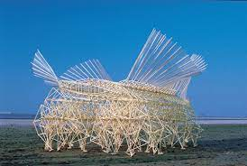

<topbar style="display:none;">
<item><a href="../index.html">Home</a></item>
<item><a href="../about.html">About</a></item>
</topbar>
## Week 1 - Project Overview and Precedents
<br>
### Project Overview
The goal of the project is to "design an intervention that captures energy from the environment, and use it."
What that means and the realization of that statement is the main project of this class.
This class is focused on creating one project with this goal in mind, through ideation, research, design, and iteration to complete a working prototype.
The idea is to separate into teams so that not one person is tackling the whole thing by themself;
specialized teams will focus on one main area, and eventually their contributions will be merged into a whole.
There are some things that we would like this project to accomplish, like a public demonstration on sustainability,
perform an action already being done by traditional forms of energy, etc.
### Precedents
We aren't starting from scratch; we are focusing our brainstorming on previous designs and ideas to hopefully provide some
inspiration for a new technology that we can develop in this course. We may want to draw inspiration from things like
a solar generator or a strandbeest:


With some sort of precedent, hopefully we can make the brainstorming more stream-lined and have a sort of framework to jump start from.
<!-- This is a comment, it is ignored by the compiler/interpreter -->
<!-- All of this stuff is good html reference-->
<!--## Week 1 - Precedents
Any text I write will be formatted as a paragraph. I can add local images using the syntax below:

I can add remote images like this:

If I need features that are not accessible through MarkDown, I can still use html tags. For example, resizing images:

I can also include things like YouTube videos by clicking "copy embed code" and pasting an iframe element in my file, like this:
<iframe width="600" height="400" src="https://www.youtube.com/embed/LewVEF2B_pM" title="YouTube video player" frameborder="0" allow="accelerometer; autoplay; clipboard-write; encrypted-media; gyroscope; picture-in-picture" allowfullscreen></iframe>
_Use underscores to write in italics._
Here is a list:
* Item 1
* Item 2 -->